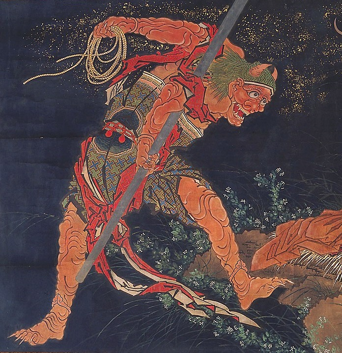

Oni

Son similares a los ogros de la cultura occidental.
En Japón se celebra todos los años durante el mes de febrero el Setsubun no Hi.
Sirve para ahuyentar a estos seres y atraer la buena suerte.
Los adultos se disfrazan de Oni para que los niños les tiren semillas de soja mientras dice: Oni wa soto, fuku wa uchi
.